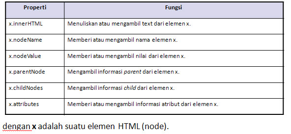
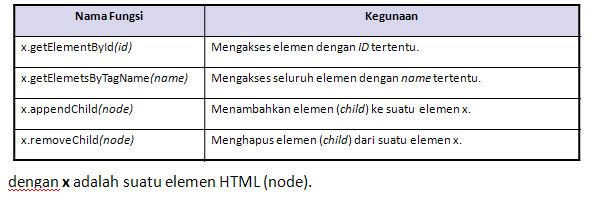
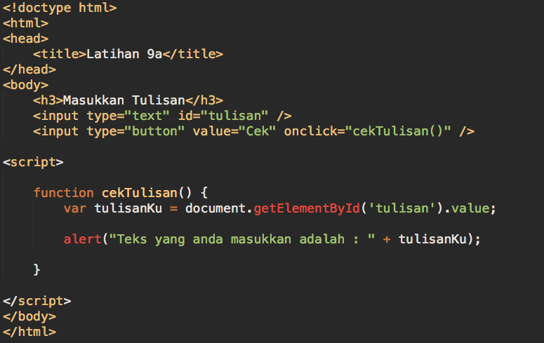
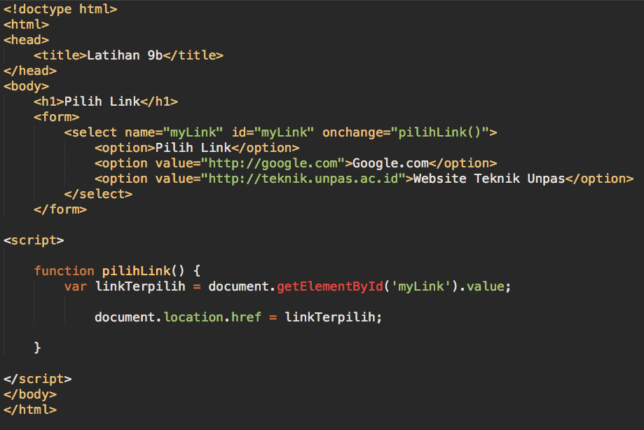
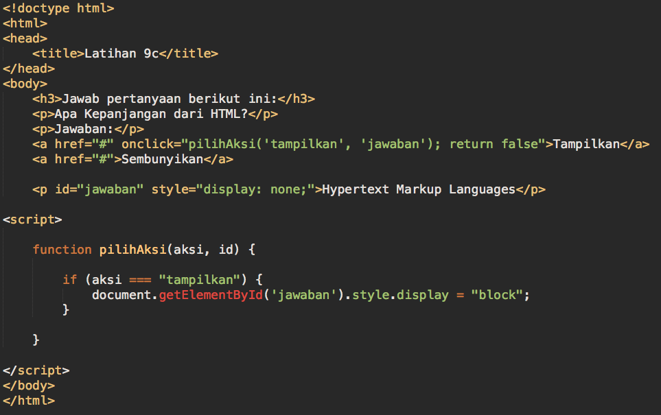
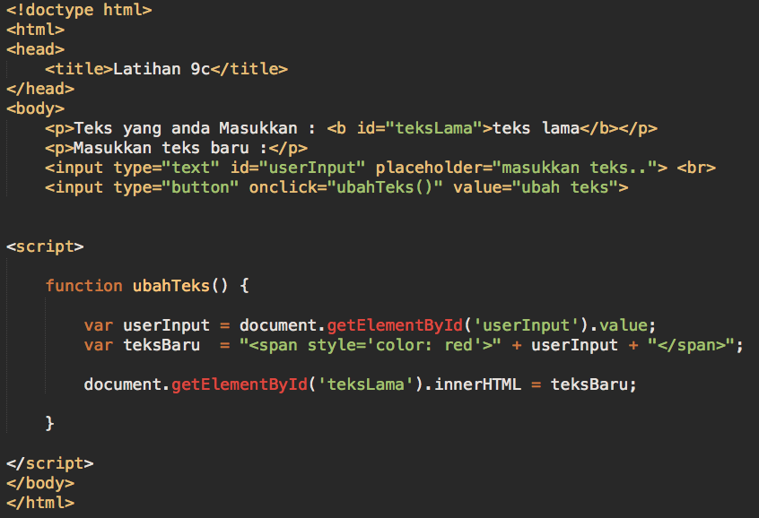
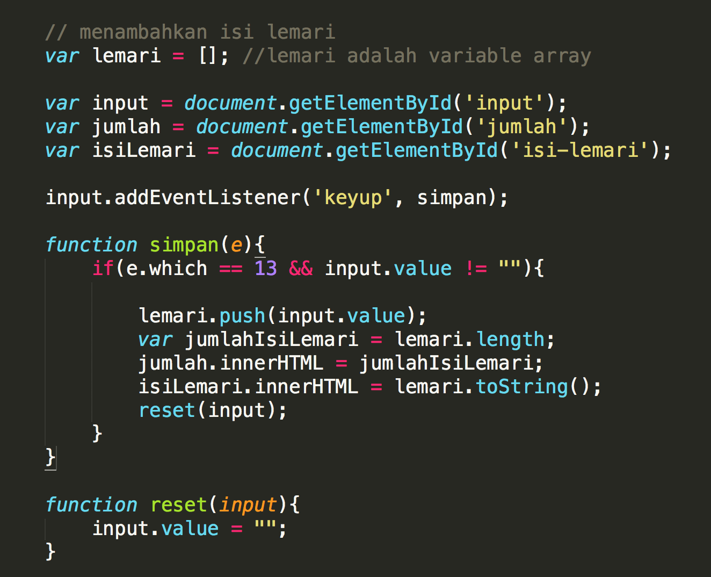

HTML + DOM
- DOM, singkatan dari Document Object Model, adalah sebuah cross-platform dan sebuah bahasa independen untuk merepresentasikan dan berinteraksi dengan objek dalam HTML, XHTML, dan dokumen XML.
- HTML DOM adalah cara baku untuk mengakses dan memanipulasi dokumen HTML.
- Setiap dokumen HTML yang ditampilkan pada browser akan menjadi sebuah Document Object.
- Sebuah Document Object menyediakan akses ke semua elemen HTML di dalam halaman.
- Setiap elemen HTML dapat diakses dengan JavaScript atau bahasa pemrograman lain.
Struktur DOM
Dalam HTML DOM, semua yang berada di dokumen HTML adalah sebuah node (titik)- Seluruh dokumen HTML disebut document node.
- Setiap elemen HTML disebut element node.
- Text di dalam elemen HTML disebut text node.
- Setiap atribut TAG HTML disebut atribute node.
- Komentar disebut comment node.

Properti DOM
Berikut ini adalah properti dari DOM.
Fungsi DOM
Berikut ini beberapa fungsi yang dimiliki oleh DOM
Javascript DOM Event
Dengan menggunakan DOM, kita dapat mendaftarkan event handler yang berbeda untuk tiap-tiap elemen pada dokumen HTML.
Sebuah event pada dasarnya merupakan kombinasi dari fungsi.
Daftar event pada javascript dapat dilihat disini.
Daftar Event

Contoh 1 - mengambil isi dari elemen form dan menampilkannya
salinlah script berikut dan perhatikan hasilnya.
tambahkanlah sebuah pengkondisian untuk menampilkan pesan kesalahan apabila user tidak memasukan inputan
Contoh 2 - mengambil isi elemen dan menggunakannya untuk berpindah halaman
salinlah script berikut dan perhatikan hasilnya.
tambahkanlah 3 link baru pada select, lalu cek script tetap berfungsi atau tidak
tambahkanlah sebuah pengkondisian untuk menampilkan pesan kesalahan apabila user memilih option dengan value kosong
Contoh 3 - menampilkan dan menyembunyikan elemen menggunakan javascript
salinlah script berikut dan perhatikan hasilnya.
lakukan hal yang sama ketika kita menekan link 'sembunyikan'. tapi kali ini sembunyikan teks-nya.
Contoh 4 - menyisipkan elemen baru di dalam elemen yang sudah ada
salinlah script berikut dan perhatikan hasilnya.
coba buat sebuah contoh kasus baru menggunakan innerHTML
Latihan 1 - Menambahkan fungsi login pada website
-
L1<NRP>.html
- Pada latihan kali ini, kita akan bekerja dengan halaman login.
- salin source code berikut ini terlebih dahulu. untuk menggunakan source code tadi harus terkoneksi internet
- buatlah sebuah fungsi login menggunakan javascript yang mengecek username dan password yang diinputkan user.
- jika username dan password = "admin" maka tampilkan popup alert "Selamat datang admin" dan alihkan ke halaman admin.
- tangani apabila user tidak memasukkan input tapi menekan tombol login.
- tangani juga apabila user salah memasukkan username dan password.
- buatlah halaman administrator (admin.html) dan isilah halamannya minimal dengan tulisan "Ini adalah halaman Admin".
- pada halaman admin, ubah link login menjadi logout untuk kembali ke halaman utama

Latihan 2 - Mengganti Huruf menjadi Kapital
-
L2<NRP>.html
Gunakan source code yang ada pada link ini untuk latihan 2 sampai 4

Pada latihan 2, mengubah huruf dalam cover menjadi kapital dan sebaliknya.
perhatikan, coba serta pahami kode berikut ini :

Apabila ada kesulitan segera bertanya pada asisten atau dosen.
Latihan 3 - Mengubah posisi serta warna background navbar
-
L3<NRP>.html
Pada latihan 3, mengubah posisi serta warna background untuk menu navigasi.

perhatikan, coba serta pahami kode berikut ini :

Apabila ada kesulitan segera bertanya pada asisten atau dosen.
Latihan 4 - Simulasi Array menggunakan "Lemari"
-
L4<NRP>.html
Pada latihan 4, melakukan simulasi penggunaan array dengan "lemari".
perhatikan, coba serta pahami kode berikut ini :

Hasilnya :

Apabila ada kesulitan segera bertanya pada asisten atau dosen.